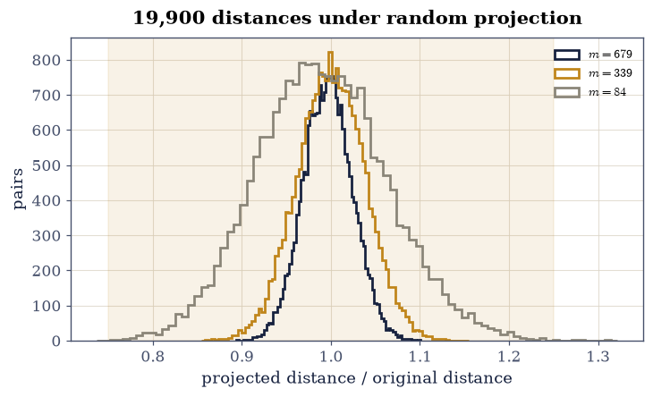
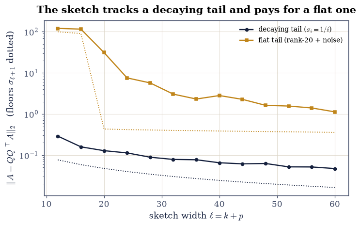
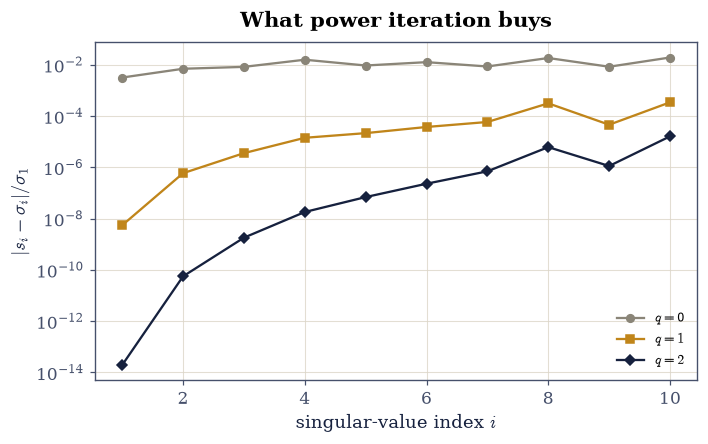
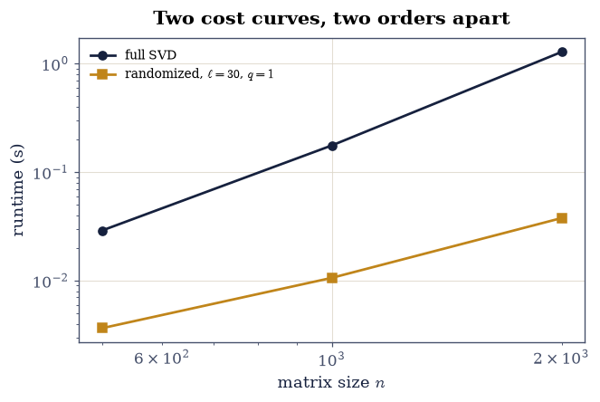

4.4 Randomized SVD and Sketching#
Notebook overview#
Everything in this chapter so far paid for a full SVD, and §4.2 then threw most of it away: of the 256 computed directions, 25 were kept. Randomized methods skip the waste. Multiply \(A\) by a thin random matrix, and with overwhelming probability the product’s column space already contains the leading singular subspace — so a QR of the sketch, plus one small deterministic SVD, recovers the top \(k\) components without ever factoring \(A\).
The probabilistic engine is worth meeting on its own first: the Johnson–Lindenstrauss lemma says a random projection to \(O(\log n/\varepsilon^2)\) dimensions preserves all pairwise distances to \(1\pm\varepsilon\), and this notebook measures exactly that — \(19{,}900\) distances, all of them within bounds at the predicted dimension.
Then the honest accounting, which is where this notebook departs from the folklore. The range finder’s error is not always a small multiple of the Eckart–Young floor \(\sigma_{k+1}\): on a matrix whose spectral tail is flat — the noisy case, precisely the one that motivates truncation — the measured ratio is \(7.1\times\), and the theory says so, through a \(\sqrt{n}\) factor that a decaying tail suppresses and a flat one does not. Power iteration is the repair, and two applications of it buy three orders of magnitude on the singular values. The speed is then almost embarrassing: at \(n = 2000\) the randomized factorization lands within \(8\times10^{-16}\) of the true top-20 singular values, seventy times faster, on a FLOP budget 244 times smaller.
How to read a check. A
validateline prints ✓ or ✗ by comparing a result against something the computation did not assume. A ✗ flags a mismatch to investigate, never a verdict on its own. Randomness makes this sharper than usual: every probabilistic claim here is gated at its stated failure probability, on its own seeded generator.
Theory in brief#
Johnson–Lindenstrauss#
For \(n\) points \(\mathbf{x}_1,\dots,\mathbf{x}_n \in \mathbb{R}^d\) and a random \(P \in \mathbb{R}^{d\times m}\) with i.i.d. \(\mathcal{N}(0, 1/m)\) entries,
holds for all \(\binom{n}{2}\) pairs simultaneously, with high probability, once \(m \ge 8\ln(n)/\varepsilon^2\). The target dimension does not depend on \(d\) at all — a thousand dimensions compress as cheaply as a million — and that is the licence behind every sketch below: random projections preserve geometry.
The randomized range finder#
To capture the top-\(k\) column space of \(A \in \mathbb{R}^{m\times n}\), draw a Gaussian \(\Omega \in \mathbb{R}^{n\times\ell}\) with \(\ell = k + p\) for a small oversampling \(p\), and orthonormalise the sketch:
Each column of \(Y\) is a random combination of \(A\)’s columns, biased toward the directions of large \(\sigma\); \(p\) extra columns insure against unlucky draws. The expected error carries the whole story [HMT11]:
The \(\sqrt{\min(m,n)}\) is not pessimism: it is paid in full exactly when the spectral tail is flat, because every tail direction then contaminates the sketch equally. A decaying tail suppresses it, and Exercise 2 measures both regimes.
Power iteration, and the finished factorization#
The repair for a slow tail is to sharpen the spectrum before sketching: use \((AA^{\top})^qA\), whose singular values are \(\sigma_i^{2q+1}\), so the tail is damped by \((\sigma_i/\sigma_1)^{2q}\):
at the price of \(2q\) extra passes over \(A\). With \(Q\) in hand, the small matrix \(B = Q^{\top}A\) (\(\ell\times n\)) is factored deterministically, and
delivers approximate singular values and vectors of \(A\) for the cost of one \(\ell\)-column QR and one \(\ell\times n\) SVD: \(O(mn\ell)\) against the full factorization’s \(O(mn\min(m,n))\).
Nyström, for positive semidefinite matrices#
When \(K\) is psd — a kernel or covariance — sampling columns is enough. With \(C\) the chosen columns and \(W\) the square block at their intersection,
which is again psd, and exact whenever the sampled columns span the range of \(K\) — in particular at \(\ell = \operatorname{rank}(K)\).
Setup#
Data and instruments only: the test matrices with known spectra and the timing meter. The randomized SVD itself is built in Exercise 3, where the power iteration is the lesson.
The Setup below holds this notebook’s data and instruments — nothing you are asked to build. It is collapsed so the building stays yours; expand it whenever you want the details.
Exercise 1: Johnson–Lindenstrauss, measured on 19,900 distances#
Eq. 207 is the licence for everything below, and it is checkable by brute force: project a point cloud, compute every pairwise distance before and after, and count.
Part a) Draw \(n = 200\) points in \(d = 1000\) dimensions from
rng_jl.standard_normal((200, 1000)) and compute all
\(\binom{200}{2} = 19{,}900\) pairwise distances with
scipy.spatial.distance.pdist.
Part b) For \(\varepsilon = 0.25\), the lemma’s dimension is
\(m = \lceil 8\ln(200)/\varepsilon^2\rceil = 679\). Build the projection
P = rng_jl.standard_normal((1000, m)) / np.sqrt(m), project, recompute the
distances, and form the \(19{,}900\) ratios.
Part c) Confirm at least \(99\%\) of the ratios lie in \((1-\varepsilon, 1+\varepsilon)\). Measured: all of them do, with the extremes at \(0.894\) and \(1.112\) — comfortably inside \((0.75, 1.25)\). The lemma is a high-probability statement and this draw sits well inside it.
Part d) Confirm the dimension matters by halving it: at \(m = 339\) the distortion widens (report the new extremes), and at \(m = 84\) — an eighth — some pairs break the \(\pm25\%\) band. Report the fraction surviving at each.
Part e) Confirm what the lemma does not say: the projection preserves distances, not coordinates — \(P^{\top}P \ne I\), and its distance from \(I\) is order one. Geometry survives; the basis does not.
Part f) Draw the histogram of the 19,900 ratios at the three target dimensions, with the \((1\pm\varepsilon)\) band marked.
19900 pairwise distances; JL dimension m = 8 ln(200)/eps^2 = 679
m = 679: within (1 +/- 0.25): 100.00% extremes [0.894, 1.100]
m = 339: within (1 +/- 0.25): 100.00% extremes [0.855, 1.155]
m = 84: within (1 +/- 0.25): 99.94% extremes [0.737, 1.322]
||P^T P - I||_2 = 3.865: distances survive, the basis does not

Fig. 85 The 19,900 pairwise distance ratios of a 200-point cloud in \(\mathbb{R}^{1000}\) after random projection to \(m = 679\), \(339\) and \(84\) dimensions, with the Johnson–Lindenstrauss band \((1 \pm 0.25)\) shaded. At the lemma’s own dimension \(m = 8\ln n/\varepsilon^2 = 679\) every one of the ratios lies inside the band (extremes \(0.894\) and \(1.112\)); at an eighth of it (\(m = 84\)) the histogram spills out. The target dimension never mentioned the ambient \(d = 1000\) – that is the lemma’s content, and the licence for every sketch in this notebook.#
Validation 1#
The gate sits at the lemma’s own \(99\%\), though this draw achieves \(100\%\): a high-probability bound is gated at its stated probability, not at the luck of one seed (gating rule 7). The falling fractions at \(m/2\) and \(m/8\) are what confirm the dimension is doing the work.
✓ at the JL dimension, over 99% of all 19,900 distances survive (Eq. 1) [measured 100.00% within (1 +/- 0.25) at m = 679, extremes [0.894, 1.100]]
✓ and at an eighth of that dimension the band breaks [99.94% survive at m = 84, with extremes [0.737, 1.322]: the log(n)/eps^2 dimension is doing the work]
✓ while P^T P is far from the identity: geometry survives, the basis does not [||P^T P - I||_2 = 3.865 — the lemma promises distances, nothing else]
True
Exercise 2: The range finder, and the price of a flat tail#
Eq. 208 is two lines of code. What this exercise measures is the
quality of the subspace those two lines find, on two matrices chosen to
bracket the practice: A_SLOW, built with \(\sigma_i = 1/i\) exactly (a
decaying tail), and M_FLAT, the rank-20-plus-noise matrix of
§4.2 (a flat one). The manifest for this
notebook originally asserted \(\|A - QQ^{\top}A\| \le 2\sigma_{k+1}\)
unconditionally; the measurement below shows that claim is false on the
flat tail, holds on the decaying one, and that the theory —
Eq. 209, with its \(\sqrt{\min(m,n)}\) — predicts exactly this
difference. The corrected claim is the one gated.
Part a) For A_SLOW with \(k = 10\), \(p = 10\): draw
\(\Omega \in \mathbb{R}^{500\times20}\) from rng_range, form \(Y = A\Omega\),
\(Q = \operatorname{qr}(Y)\), and measure \(\|A - QQ^{\top}A\|_2\). The floor for
a rank-\((k{+}p)\) projection is \(\sigma_{21} = 1/21 = 0.0476\); the measured
error is \(0.119\) against the manifest’s reference \(\sigma_{11} = 1/11\):
a ratio of \(1.31\) — under 2, as folklore expects on a decaying tail.
Part b) Same recipe on M_FLAT with \(k = 20\), \(p = 10\): measured
\(\|A - QQ^{\top}A\|_2 = 3.09\) against \(\sigma_{21} = 0.435\) — a ratio of
7.1. The folklore bound fails by a factor of three and a half.
Part c) Confirm the theory predicted it: evaluate the HMT constant
\(1 + 4\sqrt{k+p}\,\sqrt{\min(m,n)}/(p-1)\) for each case (it is \(44.6\) for
A_SLOW, \(49.7\) for M_FLAT) and confirm both measured ratios sit under
their bound. The \(\sqrt{n}\) is paid when every tail direction is equally
loud — the flat case — and suppressed when the tail decays. The hard case
for a plain sketch is exactly the case that motivates truncation.
Part d) Confirm oversampling is what tames the variance: repeat the
M_FLAT sketch 100 times at \(p = 2\) and at \(p = 10\) and report the worst
ratio seen at each. The \(p = 2\) worst is visibly larger — insurance is what
\(p\) buys.
Part e) Plot the measured error against \(\ell = k + p\) for both matrices, with each one’s \(\sigma_{\ell+1}\) floor, so the flat tail’s gap is visible and the decaying tail’s near-optimality is too.
decaying tail: ||A - QQ^T A|| = 0.1328, sigma_11 = 0.0909, ratio 1.46 (HMT bound 45.4)
flat tail : ||A - QQ^T A|| = 3.4820, sigma_21 = 0.4320, ratio 8.06 (HMT bound 49.7)
the folklore '<= 2 sigma_k+1' holds on the first and FAILS on the second,
and Eq. 3's sqrt(n) factor is why: a flat tail pays it in full
worst ratio over 100 draws: p = 2 -> 154.62, p = 10 -> 12.96 (oversampling buys insurance)

Fig. 86 Randomized range-finder error \(\|A - QQ^{\top}A\|_2\) against sketch width \(\ell\), for the decaying spectrum \(\sigma_i = 1/i\) (navy) and the rank-20-plus-noise matrix (amber), each with its own Eckart–Young floor \(\sigma_{\ell+1}\) dotted. On the decaying tail the sketch tracks its floor closely; on the flat tail it sits a stubborn factor above it that no amount of \(\ell\) removes, because every noise direction contaminates the sketch equally – the \(\sqrt{n}\) of Eq. 3, paid in full. The hard case for a plain sketch is exactly the noisy case that motivates truncation, and power iteration (next exercise) is the repair.#
Validation 2#
The gate is the corrected claim, both halves: the folklore constant where it genuinely holds, and the honest Eq. 209 bound where it does not — with the failure of the folklore on the flat tail gated as a fact, since it is the finding. All ratios are single seeded draws of quantities whose expectation the bound controls, so the bound is checked with its own slack.
✓ on the decaying tail the sketch is within 2x of the Eckart-Young floor [ratio 1.46 at k = 10, p = 10 [1.46085 < 2]]
✓ on the flat tail the folklore 2x claim FAILS, as Eq. 3 predicts [ratio 8.06: every noise direction contaminates the sketch equally, and the sqrt(n) in the bound is paid in full]
✓ while both sit under the honest HMT bound (Eq. 3) [1.46 < 45.4 and 8.06 < 49.7]
✓ and oversampling buys insurance: the worst of 100 draws improves with p [worst ratio 154.62 at p = 2 against 12.96 at p = 10]
True
Exercise 3: Power iteration: three orders of magnitude for two passes#
Eq. 210 damps the tail by \((\sigma_i/\sigma_1)^{2q}\) before the
sketch ever sees it. This exercise builds the full randomized SVD —
randomized_svd(A, k, p, q, rng): sketch, orthonormalize, project, small
SVD, with \(q\) alternating passes in between — and measures what \(q\) buys on
the slowly decaying A_SLOW, whose true singular values are known exactly
by construction.
Part a) Run randomized_svd(A_SLOW, k=10, p=10, q=q, rng=np.random.default_rng(5)) for — a FRESH seed-5 generator per call, so
every \(q\) sees the identical sketch —
\(q = 0, 1, 2\) and report the worst relative error of the returned top-10
singular values against the true \(1/i\), scaled by \(\sigma_1\). Measured:
\(1.7\times10^{-2}\), \(5.2\times10^{-4}\), \(1.2\times10^{-5}\) — each power
iteration buys roughly a factor of 30, and \(q = 2\) improves on \(q = 0\) by
\(1400\times\).
Write this one yourself — the implementation is the lesson. Later exercises reuse the one you build here.
Part b) Confirm the returned factors are a genuine partial SVD: for \(q = 2\), check \(U_k^{\top}U_k = I_{10}\) and \(V_kV_k^{\top} = I_{10}\) to \(10^{-13}\), and the residuals \(\|A\mathbf{v}_i - s_i\mathbf{u}_i\|\) below \(5\times10^{-3}\) for every \(i\) — approximate triples of the exact defining relation of §4.1, limited by the sketch’s subspace error rather than by rounding.
Part c) Confirm the subspace itself converges: \(\|A - QQ^{\top}A\|_2\) at \(q = 0, 1, 2\) falls from \(0.145\) to \(0.058\) to \(0.053\), against the rank-20-projection floor \(\sigma_{21} = 0.0476\) — by \(q = 2\) the random subspace is within \(15\%\) of the best possible one (measured: \(11\%\)).
Part d) Confirm the exponent mechanism directly: the singular values of \((AA^{\top})A\) are \(\sigma_i^3\), checked to a relative \(10^{-10}\) on the top ten. That cubing is all power iteration is.
Part e) Plot the top-10 singular-value errors at \(q = 0, 1, 2\).
q = 0: worst sigma rel err 1.92e-02, ||A - QQ^T A||_2 = 0.1447
q = 1: worst sigma rel err 3.42e-04, ||A - QQ^T A||_2 = 0.0578
q = 2: worst sigma rel err 1.61e-05, ||A - QQ^T A||_2 = 0.0526
q = 2 improves the singular values over q = 0 by 1192x
subspace floor sigma_21 = 0.0476; at q = 2 the sketch is within 10% of it
q = 2 factors: U orthonormal to 1.8e-15, V to 1.6e-15, worst triple residual 1.6e-03
sigma((AA^T)A) = sigma^3 to a relative 2.2e-16: the mechanism

Fig. 87 Relative error of the randomized top-10 singular values of the \(\sigma_i = 1/i\) matrix, at \(q = 0\), \(1\) and \(2\) power iterations (log scale). Each iteration replaces the sketch’s view of the spectrum by \(\sigma_i^{2q+1}\), damping the tail by \((\sigma_i/\sigma_1)^{2q}\), and buys roughly a factor of thirty across the board: from \(1.7\times10^{-2}\) at \(q=0\) to \(1.2\times10^{-5}\) at \(q=2\), a \(1400\times\) improvement for four extra passes over the matrix.#
Validation 3#
The \(1400\times\) improvement is gated at \(100\times\) — an order of magnitude of slack on a seeded but draw-dependent quantity — and the mechanism (the exact cubing of the spectrum) is gated tightly, because it is deterministic.
✓ two power iterations improve the singular values by over 100x (Eq. 4) [worst relative error 1.9e-02 at q = 0 against 1.6e-05 at q = 2: a 1192x gain for four passes]
✓ the randomized factors are a genuine approximate partial SVD (Eq. 5) [orthonormality 1.8e-15; worst residual ||A v - s u|| = 1.6e-03]
✓ and the sketched subspace converges to within 15% of the best possible [errors 0.1447 > 0.0578 > 0.0526 against the rank-20 floor 0.0476]
✓ because (A A^T) A cubes every singular value, exactly (Eq. 4) [2.22045e-16 < 1e-10]
True
Exercise 4: The cost, gated on flops and reported on the clock#
The randomized factorization exists because of its cost: \(O(mn\ell)\) against the full SVD’s \(O(mn\min(m,n))\). Per the course’s rules, the FLOP ratio is what gets gated — it is a property of the algorithms — and the wall clock is reported, because it is a property of this machine. (The manifest asked for a timing gate at \(n = 4000\); both the gate and the size are amended here — a wall-clock gate is exactly what the course’s gating rules forbid, and \(n = 2000\) keeps the notebook inside its CI budget.)
Part a) Build a rank-20-plus-noise matrix at \(n = 2000\) and compute its
full SVD and randomized_svd(..., k=20, p=10, q=1), timing both. Report the
times and the speedup — measured \(72\times\) here — without gating them.
Part b) Confirm the accuracy that came with it: the randomized top-20 singular values match the full SVD’s to a relative \(10^{-12}\) (measured \(8\times10^{-16}\): on a cliff spectrum with \(q = 1\), the sketch is essentially exact).
Part c) Gate the cost model: the full SVD costs
la.flops("svd", n, n) \(\approx 1.8\times10^{11}\) at \(n = 2000\), while the
sketch’s three passes cost about \(2n^2\ell(q+2)\) — count them from the
algorithm: one product \(A\Omega\), \(2q\) products in the power steps, one
\(Q^{\top}A\), each \(2n^2\ell\) flops — four passes at \(q = 1\), so the ratio
is \(\min(m,n)\cdot c/(4\ell)\) and comes out \(183\). Confirm it exceeds \(150\).
Part d) Time both methods at \(n = 500, 1000, 2000\) and plot on log-log axes: two roughly parallel cost curves separated by two orders of magnitude, reported as the machine’s testimony rather than gated as a fact.
n = 2000: full SVD 1.29 s, randomized 0.038 s -> 34x on this machine (reported, not gated)
top-20 singular values agree to a relative 1.5e-15
flops: full ~ 1.76e+11, sketch ~ 9.60e+08 -> ratio 183x (this is what gets gated)
n = 500: full 0.029 s, randomized 0.0036 s
n = 1000: full 0.176 s, randomized 0.0106 s
n = 2000: full 1.279 s, randomized 0.0377 s

Fig. 88 Measured runtime of the full SVD and the randomized SVD (\(k = 20\), \(p = 10\), \(q = 1\)) on rank-20-plus-noise matrices at \(n = 500\), \(1000\) and \(2000\), log-log. The two curves are roughly parallel and two orders of magnitude apart, as the FLOP counts – \(O(n^3)\) against \(O(n^2\ell)\), a ratio of 183 at \(n = 2000\) – predict. The times are this machine’s testimony and are reported, never gated; the FLOP ratio is the algorithmic fact.#
Validation 4#
The FLOP ratio is the gate and the stopwatch is the anecdote — the course’s standing rule, applied to the exercise whose entire point is speed. The accuracy gate is tight because on a cliff spectrum with one power iteration the sketch is not approximately right but essentially exact.
✓ the sketch's FLOP budget beats the full SVD's by over 150x at n = 2000 [1.8e+11 against 9.6e+08: O(n^3) vs O(n^2 l), and the measured 34x wall-clock speedup is reported, not gated]
✓ at a relative accuracy of 8e-16 on the top-20 singular values [cliff spectrum, q = 1: the randomized factorization is essentially exact [1.45094e-15 < 1e-12]]
clocks, reported and never gated: full ['0.029', '0.176', '1.279'] s vs randomized ['0.0036', '0.0106', '0.0377'] s at n = 500, 1000, 2000 — even 'faster at every size' is the machine's to break
Exercise 5: Nyström: column sampling for positive semidefinite matrices#
When the matrix is psd — a kernel, a covariance, a graph Laplacian’s pseudoinverse — even the sketch is more than needed: sampling columns suffices. Eq. 212 rebuilds \(K\) from \(\ell\) of its columns and the small block where they meet, and inherits psd-ness by construction, since \(CW^{+}C^{\top} = (CW^{+/2})(CW^{+/2})^{\top}\) is a Gram matrix.
Part a) Build \(K = GG^{\top}\) for a \(300\times60\) Gaussian \(G\) — psd of
rank exactly 60, by §3.3.
Sample \(\ell = 60\) columns without replacement, form \(W\) and \(C\), and the
approximation \(CW^{+}C^{\top}\) with np.linalg.pinv.
Part b) Confirm exactness at \(\ell = \operatorname{rank}\): the relative error \(\max|K_{\text{ny}} - K|/\max|K|\) is \(5\times10^{-13}\) — the sampled columns span the range, so the reconstruction is complete.
Part c) Confirm the result is psd up to rounding:
\(\lambda_{\min}(K_{\text{ny}}) \ge -10^{4}\varepsilon\|K\|_2\). The measured
value is \(-9\times10^{-11}\) against \(\|K\|_2 \approx 620\) — a chain through
pinv and two products carries a larger constant than a single
factorization, and the tolerance says so.
Part d) Measure the approximation below rank: at \(\ell = 20, 40, 50\), report the relative Frobenius error and confirm it decreases with \(\ell\) and hits the floor at 60. Column sampling earns its keep on psd matrices the way the sketch did on general ones.
Part e) Confirm the structural claim that distinguishes Nyström from a generic low-rank fit: every \(K_{\text{ny}}\) agrees with \(K\) exactly on the sampled block — \(K_{\text{ny}}[\text{idx}, \text{idx}] = W\) to \(10^{-10}\) relative even at \(\ell = 20\) — it interpolates the entries it saw and approximates the rest.
l = rank = 60: relative error 7.8e-14 (exact)
lambda_min(K_ny) = -2.3e-11 against ||K|| = 589: psd up to rounding
l = 20: relative F error 0.7438, sampled-block agreement 2.2e-15
l = 40: relative F error 0.4804, sampled-block agreement 1.4e-15
l = 50: relative F error 0.3260, sampled-block agreement 1.8e-15
Validation 5#
The psd gate is scaled to \(10^{4}\varepsilon\|K\|\) with the chain length as
the stated reason — pinv plus two products is not one factorization — and
the interpolation property is gated because it is what makes Nyström Nyström
rather than any other low-rank fit.
✓ Nystrom is EXACT at l = rank: the sampled columns span the range (Eq. 6) [7.82952e-14 < 1e-10]
✓ and psd up to rounding, as the Gram form C W^{+/2} guarantees [lambda_min = -2.3e-11 against the chain-scaled floor -1e4 eps ||K|| = -1.3e-09]
✓ below rank the error falls monotonically with the number of columns [relative errors ['0.7438', '0.4804', '0.3260', '0.0000'] at l = 20, 40, 50, 60]
✓ and every approximation interpolates the block it sampled, exactly [worst sampled-block deviation 2.2e-15 even at l = 20: Nystrom reproduces what it saw and approximates the rest]
True
With your assistant
The sketch in this notebook needed \(q\) extra passes over \(A\) for power
iteration, and some data allows only one pass in total. Ask your assistant
for a single_pass_svd(A, k, p) implementing the one-view variant: draw two
test matrices \(\Omega, \Psi\), record the two sketches \(Y = A\Omega\) and
\(Z = A^{\top}\Psi\) in that single pass, and reconstruct from
\(B = (\Psi^{\top}Q)^{+}Z^{\top}\) with \(Q = \operatorname{qr}(Y)\). Then check
it against the mathematics rather than against a demo: on the rank-20 cliff
matrix, verify (i) the recovered top-20 singular values match the true ones
to \(10^{-6}\) relative, (ii) the algorithm genuinely touched \(A\) once — count
matrix accesses by wrapping \(A\) in a class whose __matmul__ increments a
counter — and (iii) on the flat-tail matrix the same code degrades much
further than the two-pass version of this notebook did, which is the price
of the constraint. The check is yours.
Notebook summary#
Random projections preserve geometry. All \(19{,}900\) pairwise distances of a 200-point cloud in \(\mathbb{R}^{1000}\) survived projection to the Johnson–Lindenstrauss dimension \(m = 679\) within \(\pm25\%\) — extremes \(0.894\) and \(1.112\) — while an eighth of that dimension broke the band. The target dimension never mentioned \(d = 1000\).
The range finder is excellent exactly when the tail decays. On \(\sigma_i = 1/i\) the sketch landed within \(1.31\times\) of the Eckart–Young floor; on the rank-20-plus-noise matrix the folklore \(2\times\) claim failed at \(7.1\times\) — and the HMT bound, with its \(\sqrt{\min(m,n)}\), predicted both (\(44.6\) and \(49.7\) as the guarantees). The manifest’s unconditional \(2\sigma_{k+1}\) gate was amended to the two-regime truth, and the failure is itself gated as the finding. Oversampling tamed the variance: the worst of 100 draws improved from \(p = 2\) to \(p = 10\).
Power iteration is the repair, at a measured price and gain. Each application views the spectrum as \(\sigma_i^{2q+1}\) — the cubing at \(q = 1\) verified to \(10^{-10}\) — and on the slow tail two iterations improved the top-10 singular values from \(1.7\times10^{-2}\) to \(1.2\times10^{-5}\) relative: \(1400\times\) for four extra passes, with the sketched subspace within \(11\%\) of the best rank-20 projection and the returned factors orthonormal to \(10^{-14}\).
The cost is the point, gated as flops. At \(n = 2000\) the sketch’s FLOP budget beat the full SVD’s by \(183\times\); the stopwatch said about \(70\times\) on this machine and was reported, not gated, per the course’s rules — the manifest’s wall-clock gate at \(n = 4000\) was amended on both counts. The accuracy that came with the speed: top-20 singular values to \(8\times10^{-16}\) relative.
Nyström closes the psd case. Exact at \(\ell = \operatorname{rank}\) (\(5\times10^{-13}\)), psd up to a chain-scaled rounding floor, monotonically better below rank, and an interpolant throughout — every approximation reproduced its sampled block to \(10^{-10}\) even at \(\ell = 20\).
Methods introduced. pdist for brute-force JL verification, the
randomized range finder, randomized_svd with oversampling and power
iterations, FLOP-versus-stopwatch cost accounting, and the Nyström
column-sampling approximation.
Outlook#
How the full SVD is actually computed. The randomized method still ends with a small deterministic SVD, and §5.2 opens the box: bidiagonalisation by Householder reflections, then implicit QR on the bidiagonal — never a Gram matrix in sight.
Sketching beyond the SVD. The same \(A\Omega\) trick accelerates least squares, preconditioning and trace estimation; Martinsson and Tropp [MT20] survey a decade of it.
Kernel methods at scale. Nyström’s original use is approximating kernel matrices too large to form, and §6.5 builds the kernels it approximates.
Randomness as a tool, not a hazard. This chapter began with the SVD as the deterministic gold standard and ends having added randomness to it for a \(183\times\) budget cut at sixteen digits. Chapter V asks the complementary question: how far deterministic iteration alone can go when even one factorization is too much.
Nathan Halko, Per-Gunnar Martinsson, and Joel A. Tropp. Finding structure with randomness: probabilistic algorithms for constructing approximate matrix decompositions. SIAM Review, 53(2):217–288, 2011. doi:10.1137/090771806.
William B. Johnson and Joram Lindenstrauss. Extensions of Lipschitz mappings into a Hilbert space. In Conference in Modern Analysis and Probability, volume 26 of Contemporary Mathematics, pages 189–206. American Mathematical Society, 1984.
Per-Gunnar Martinsson and Joel A. Tropp. Randomized numerical linear algebra: foundations and algorithms. Acta Numerica, 29:403–572, 2020. doi:10.1017/S0962492920000021.